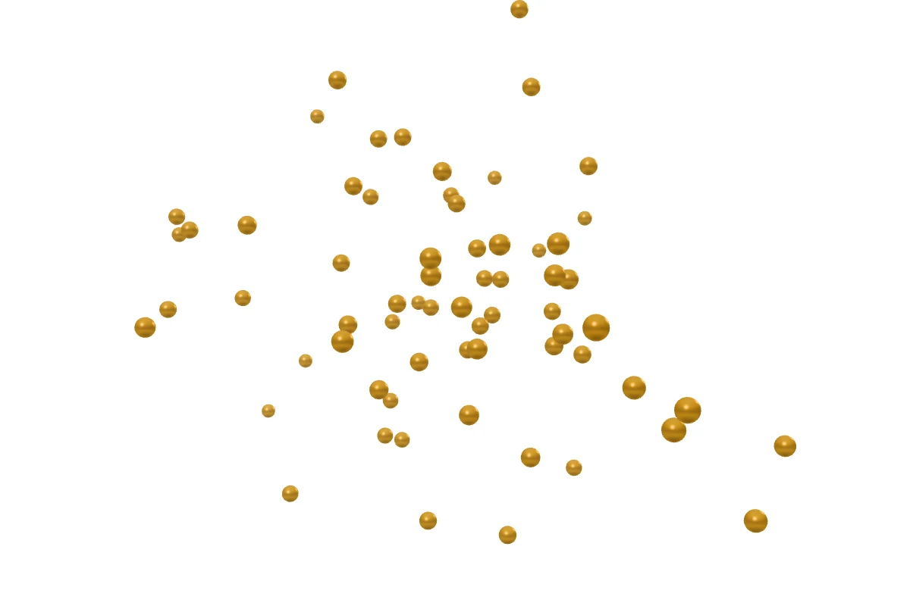
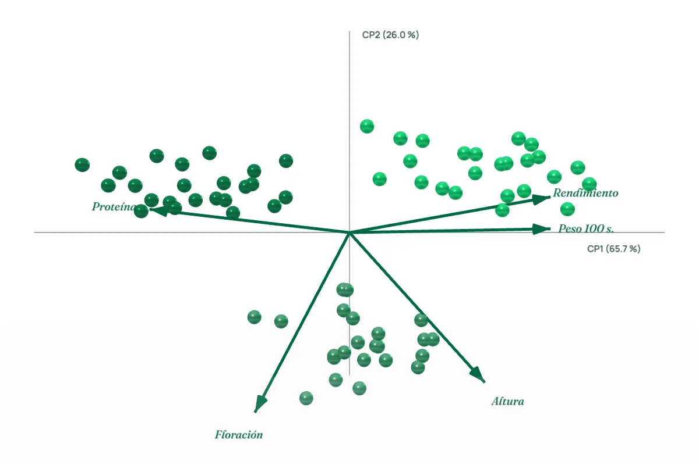
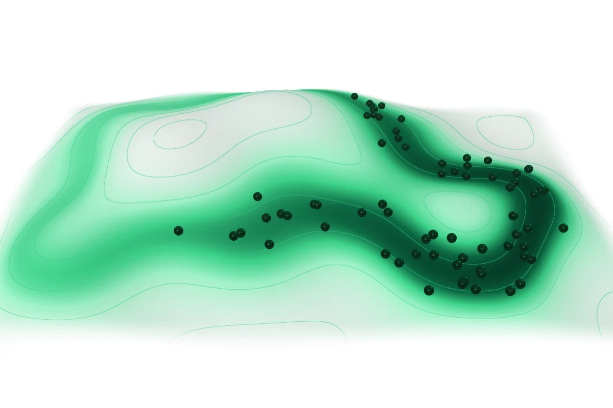
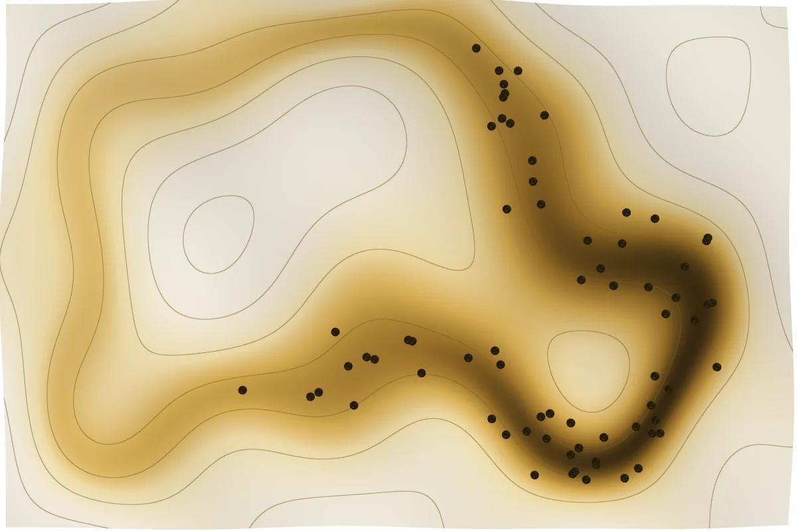

LABG — Del dato a la decisión.
Herramientas científicas gratuitas para analizar, modelar y decidir — directamente en tu navegador.
01 · Tus datos
Todo empieza con una tabla.
Parcelas, accesiones, poblaciones o registros de campo: cada fila es una observación y cada columna, una variable. Las apps leen tus hojas de cálculo tal como las tienes.
| Parcela | Grupo | Rend. t/ha | Altura cm | Floración días | P100 g | Proteína % |
|---|---|---|---|---|---|---|
| P01 | A | 7.27 | 230 | 70 | 36.2 | 9.0 |
| P02 | B | 3.93 | 148 | 77 | 29.0 | 10.9 |
| P03 | C | 4.79 | 253 | 84 | 29.6 | 9.9 |
| P04 | A | 5.25 | 192 | 69 | 34.9 | 10.1 |
| P05 | B | 4.73 | 186 | 80 | 28.6 | 11.6 |
| P06 | C | 4.36 | 221 | 88 | 28.5 | 10.3 |
| P07 | A | 5.30 | 178 | 66 | 30.8 | 9.8 |
| P08 | B | 3.00 | 159 | 79 | 27.3 | 11.6 |

02 · Análisis
Encuentra la estructura.
La nube se ordena: los componentes principales resumen cinco variables en dos ejes, las flechas muestran qué variable empuja hacia dónde y los grupos aparecen solos.
- Grupo A
- Grupo B
- Grupo C

03 · Modelos
Modela dónde puede crecer.
Los registros caen sobre el terreno y el modelo calcula, celda por celda, qué tan idóneo es cada lugar. Las curvas de nivel marcan la altitud; el color, la idoneidad.

04 · Decisión
Del dato a la decisión.
Al final, una figura lista para publicar: con su escala, su leyenda y el método redactado para tu artículo.

05 · Apps